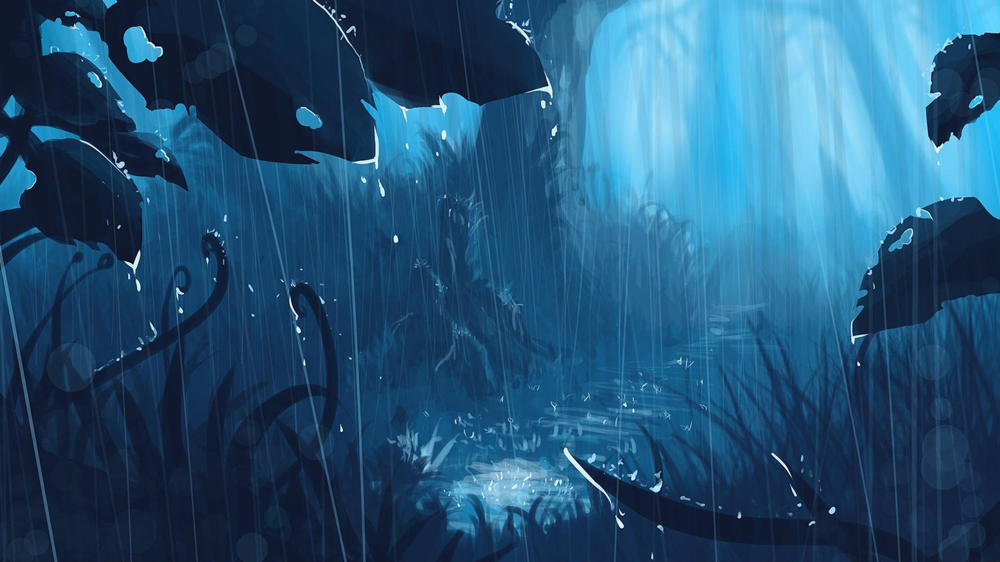
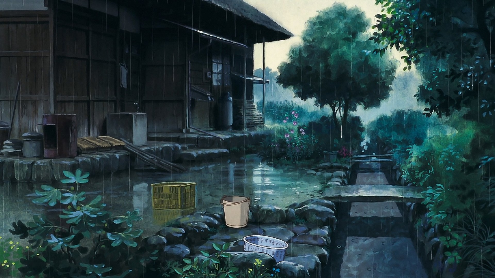

Soothing Rain
What time is rain the most relaxing to watch?

To me, night is the most relaxing time to watch.
At night it's more relaxing because it's quiet outside and light reflects off the surface more.
Do rain sounds make good white noise?

Yes it does, rain white noise can aid in many situations.
Rain white noise can help a lot specifically with sleep
What is rain good for?
Besides relaxation, rain is good for naturally watering plants.
Rain can help water trees and flowers to prevent them from dying.